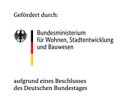
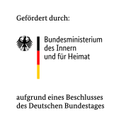

<section class="offcanvas-view offcanvas" tabindex="-1" id="offcanvasDocumentation" data-bs-backdrop="false" aria-labelledby="offcanvasDocumentationLabel">
  <div class="offcanvas-view__wrap">
    <h2 class="offcanvas-view__title" id="offcanvasDocumentationLabel">Dokumentation</h2>
    <div class="offcanvas-view__body">
      <p>StEmp-ABW ist ein Stakeholder-Empowerment-Tool für die Region Anhalt-Bitterfeld-Wittenberg (ABW). Es wurde vom Reiner Lemoine Institut (RLI) im Rahmen des Kopernikus-Projekts „ENavi“ entwickelt. Sie finden das Tool auf den WAM-Seiten des RLI.</p>
      <p>In dieser Dokumentation finden Sie methodische und technische Hintergrundinformationen und Anleitungen.</p>
      <p>Wollen Sie uns Rückmeldung geben? Hierfür können Sie gern unser Feedback-Formular verwenden.</p>
      <h3 class="offcanvas-view__subtitle">Über dieses Tool</h3>
      <p>Die Energiewende kann nur gemeinsam erreicht werden. Wie aber können alle Interessensgruppen ihre Sichtweisen und Bedürfnisse in die Energiewendeplanung einbringen? Das Reiner Lemoine Institut (RLI) hat dieses Stakeholder-Empowerment-Tool mit Unterstützung der Energieavantgarde Anhalt e.V. (EAA) entwickelt, das es Akteurinnen und Akteuren der Energiewende ermöglicht, sich an Planungsprozessen zu beteiligen.</p>
      <h3 class="offcanvas-view__subtitle">Motivation</h3>
      <p>Die Energiedialoge der Energieavantgarde Anhalt haben insbesondere im direkten Gespräch mit den Bürgerinnen und Bürgern und in der Mitglieder- und Stakeholderberatung gezeigt, dass die Möglichkeiten zur Partizipation in der Entwicklung eines zukunftsweisenden regionalen Energiesystems zwar formal gegeben sind, in der Praxis aber aufwändig und häufig unbefriedigend sind. Der ganzheitliche Blick auf die Anforderungen und Chancen eines regionalen und regenerativen Energiesystems fehlt meist. Stattdessen werden landschaftliche Veränderungen (bspw. durch Windenergieanlagen oder Freiland-PV-Anlagen), lokale Auswirkungen auf Nachbarschaften, Naturschutz- und Denkmalschutzbelange sowie Auswirkungen der „Energiewende“ auf Energiepreise etc. meist unverbunden und teils konfrontativ debattiert. Die Rechtsunsicherheit im Umgang mit den Inhalten der Regionalplanung und Raumordnung ist nur ein Ausdruck dieser komplexen Problemlage.</p>
      <p>Verbesserungspotenzial sehen die Befragten in diesem Themenfeld vor allem in der Darstellung der unmittelbaren Betroffenheit einzelner Regionen unter Berücksichtigung anderer Vorgaben in der Flächennutzung, wie beispielsweise der Mindestabstand von Windenergieanlagen zu Siedlungen. Außerdem ist eine Betrachtung variabler Szenarien des regionalen Energiebalancekreises bezogen auf Energiedargebot, Anlagen der Energieumwandlung, Energiemix durch gemeinsame Beeinflussung der Ziel- und Eingangsdaten, gemeinsames Nachvollziehen und Festlegen von Restriktionen und Potenzialen gewünscht.</p>
      <h3 class="offcanvas-view__subtitle">Partner</h3>
      <div class="offcanvas-view__logos">
        <div class="offcanvas-view__logo offcanvas-view__logo--rli">
          <a href="https://reiner-lemoine-institut.de/" target="_blank" rel="noopener noreferrer">
            
          </a>
        </div>
        <div class="offcanvas-view__logo offcanvas-view__logo--eaa">
          <a href="https://www.energieavantgarde.de/" target="_blank" rel="noopener noreferrer">
            
          </a>
        </div>
        <div class="offcanvas-view__logo offcanvas-view__logo--rg">
          <a href="https://www.region-gestalten.bund.de/" target="_blank" rel="noopener noreferrer">
            
          </a>
        </div>
      </div>
      <div class="offcanvas-view__logos">
        <div class="offcanvas-view__logo offcanvas-view__logo--bbsr">
          <a href="https://www.bbsr.bund.de/" target="_blank" rel="noopener noreferrer">
            
          </a>
        </div>
        <div class="offcanvas-view__logo offcanvas-view__logo--bmwsb">
          <a href="https://www.bmwsb.bund.de/" target="_blank" rel="noopener noreferrer">
            
          </a>
        </div>
        <div class="offcanvas-view__logo offcanvas-view__logo--bmi">
          <a href="https://www.bmi.bund.de/" target="_blank" rel="noopener noreferrer">
            
          </a>
        </div>
      </div>
    </div>
  </div>
</section>
